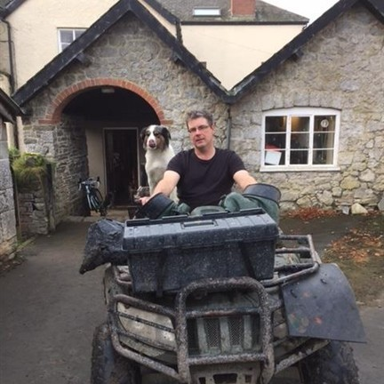

Science rooted in agriculture.
A research business based on a working farm.
Borderbio is based on a working mixed farm on the England–Wales border, bringing practical agricultural experience together with experimental science.
Laboratory to field
Borderbio brings laboratory investigation and agricultural experimentation together in one setting. Ideas can be explored using analytical chemistry and molecular biology, developed through controlled experiments, and ultimately tested under field conditions.
Being based on a working farm keeps the research connected to practical agricultural questions and provides the opportunity to investigate whether promising experimental results translate into effects that matter in practice.
Scientific background
Borderbio is led by a researcher with a background in agricultural bioinnovation, plant secondary metabolites, microbial ecology and applied experimental science.
That combination of scientific training and practical farming experience shapes the way Borderbio approaches research: start with a useful question, measure what changes, and test whether the result matters in practice.

Built for collaboration
Borderbio is designed to work collaboratively with farmers, businesses, universities and research organisations where our interests and capabilities overlap.
This can range from testing an initial idea or agricultural product through to collaborative research programmes and grant-funded R&D.
Have you got something interesting?
Let's talk about it.
If you have a research idea, agricultural product or simply think there might be some common ground, we'd be interested to hear from you.
WORK WITH BORDERBIO →